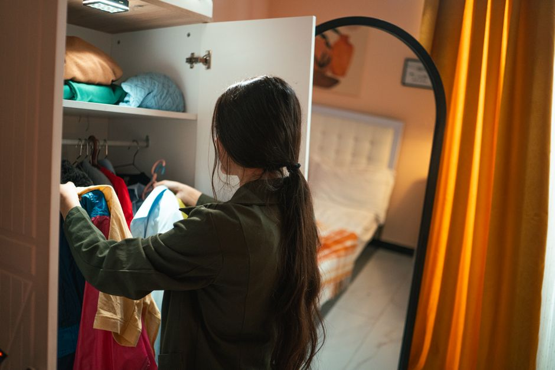
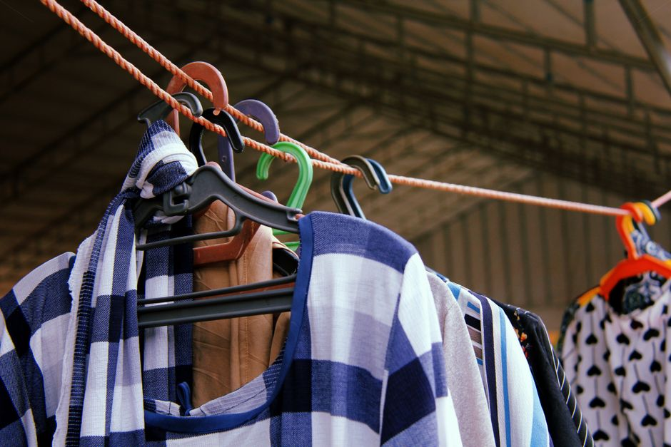

Comment ranger vos vêtements sans perdre de place

Photo: khezez | خزاز / Pexels
Organiser vos vêtements est une tâche essentielle pour maintenir votre espace de vie ordonné et efficace. Dans ce guide, nous vous proposons des méthodes pratiques pour ranger vos tenues sans sacrifier de place précieuse.
Analysez votre utilisation des vêtements
Commencez par une évaluation rapide de vos vêtements. Retenez uniquement ceux que vous portez régulièrement. Si un vêtement ne vous est pas utile plus de trois fois par an, considérez l'idée de le donner à une association ou de le vendre.
Exemple : Si vous avez une collection de dix pulls, mais que vous portez seulement trois d'entre eux au cours d'une année, réduisez votre collection à ces trois pulls. Cela vous laisse plus de place pour des articles de garde-robe que vous portez plus fréquemment.
Optez pour des systèmes de rangement adaptés
Utilisez des étagères multifonctionnelles ou des tiroirs avec compartiments pour classer vos vêtements. Par exemple, un tiroir à compartiments peut contenir plusieurs accessoires comme des chaussettes, des sous-vêtements ou des ceintures.
Conseil : Choisissez des compartiments de tiroirs avec une surface de 15 à 20 centimètres de large pour optimiser l'espace.
Organisez par catégories

Photo: Muhammad-Taha Ibrahim / Pexels
Divisez vos vêtements en catégories, comme les sous-vêtements, les t-shirts, les pantalons, les robes, etc. Rangez chaque catégorie dans une section bien définie de votre armoire. Par exemple, vous pouvez consacrer la moitié supérieure de votre armoire aux sous-vêtements et chaussures, et l'autre moitié aux pantalons et robes.
Scénario : Si vous avez une armoire de 1,80 mètre de hauteur, placez les sous-vêtements et chaussures dans les 60 centimètres en haut, et placez les pantalons et robes en dessous. Cela vous permet d'avoir l'accessoire approprié à la main lors de votre préparation matinale.
Utilisez des hangers et des tubes
Si vous possédez une grande quantité de vêtements, utilisez des hangers de tailles différentes et des tubes en plastique pour optimiser l'espace. Les hangers de taille standard (4,5 cm de large) sont parfaits pour des chemises et des vestes, tandis que les hangers de taille allongée (5,5 cm de large) conviennent mieux aux vêtements plus lourds comme les vestes en cuir ou les trench coats.
Conseil : Stockez vos vêtements par taille et par type de vêtement. Par exemple, placez tous les pantalons de taille M en haut et tous les pantalons de taille L en bas.
Utilisez la porte d'entrée comme un espace de rangement
Le vestiaire de la porte d'entrée peut être un espace sous-utilisé qui peut servir d'armoire à vêtements temporaire. Placez les vêtements que vous ne portez pas régulièrement là-bas. Vous pouvez même y installer un petit rideau pour créer une zone de transition entre l'extérieur et l'intérieur de la maison.
Exemple : Si vous avez des costumes qui ne sont utilisés que pour des occasions spéciales, rangez-les dans un sac à l'extérieur de la porte d'entrée. Vous pouvez également y stocker des chaussures de ski ou de camping.
Utilisez les plis et les roll-ups
Pour des vêtements qui ne sont pas portés souvent, utilisez le pliage plutôt que les hangers. Par exemple, les chemises pliées sous les pantalons de costume ou les vêtements de ski pliés peuvent prendre beaucoup moins de place.
Conseil : Pliez vos chemises avec une profondeur de 10 centimètres pour un aspect compact et élégant.
Révisez régulièrement votre garde-robe
Rappelez-vous de réviser votre garde-robe toutes les six mois. Cela vous permet de retirer les vêtements que vous ne portez plus et de déterminer s'il est temps d'acheter de nouveaux vêtements.
Conseil : Préparez une liste de vos articles de vêtements et notez vos fréquences de port. Vous pouvez utiliser des outils numériques comme un agenda pour noter ces informations.
En suivant ces conseils, vous pourrez maintenir un espace de rangement ordonné et efficace, même si vous êtes confronté à des limites de place.
Produits recommandés
En tant que Partenaire Amazon, je réalise un bénéfice sur les achats remplissant les conditions requises.